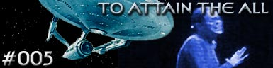

|

Escrito
por Norman Spinrad
Presa em outra dimenso,
a Enterprise abordada por um aliengena de pele azulada, que
refere a si como "O Prncipe". Ele diz a Kirk que, se
os seres humanos provarem ser merecedores, recebero a ddiva
suprema, a unio ao "Todo".
Kirk reluta em aceitar, porm cede e envia Decker e Xon (um
representante de cada raa, humano e vulcano), para tentar
desfazer o mistrio do Prncipe, pois se o capito no aceitar
a proposta do aliengena, a nave no voltaria mais para sua
dimenso.
A dupla acaba indo parar dentro uma enorme estrutura em um planetide
e fica sabendo que a sua misso atravess-la de ponta a
ponta. Durante a misso, algo estranho ocorre. Decker passa a se
comportar como um Vulcano e Xon como Humano. Ao chegar no final da
estrutura, os dois encontram esferas luminosas aguardando-os. Ao
tocar em uma delas, a mente de Xon invadida por uma energia que
ele nunca havia visto ou sentido. Com Xon servindo de condute, a
energia chega a nave unindo todas as mentes dos tripulantes em uma
s.
O preo para atingir o "Todo" acabar com a
individualidade dos seres humanos. Um preo muito alto a se
pagar, e agora Kirk tem de resolver a situao da melhor maneira
possvel.
Curiosidades
 O autor da
histria, Norman Spinrad, um aclamado escritor de fico
cientfica e autor do episdio "The Doomsday Machine",
da Srie Clssica. Esse, alm de ser um dos melhores
episdios da srie, tambm introduziu o comodoro Matt Decker, o
pai do primeiro-oficial Willard Decker da Fase II. O autor da
histria, Norman Spinrad, um aclamado escritor de fico
cientfica e autor do episdio "The Doomsday Machine",
da Srie Clssica. Esse, alm de ser um dos melhores
episdios da srie, tambm introduziu o comodoro Matt Decker, o
pai do primeiro-oficial Willard Decker da Fase II.
Episdio
anterior | Prximo
episdio |